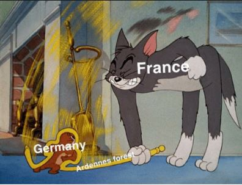

As the British and French moved to intercept the German forces heading through Belgium the French move soldiers away from the Ardennes which had thought to be impenetrable because of it's many hills and tree's but Hitler decided to test those words and shoved a full army group through it and it worked.
After the French abandoned the Ardennes, the Germans encircled the British and the French around the small port called Dunkirk.
The British quickly scrapped together a plan to evacuate the British soldiers and only the British soldiers, the French had orders to defend the Port at all cost.This plan was called Operation Dynamo and it involved ships working around the clock to bring the Soldiers back. Civilian boats were used by the navy to ferry the soldiers to the other boats,these ships were called little boats and were nick-named the little ships of Dunkirk. No civilians took part in the ferrying of troops to land.
The British and French were not the only ones at the port Netherlanders, Belgian, Canadian, French Senegalese soldiers and The 'Polish armed forces in the West' also were at the port. The 'Polish armed forces in the west' arrived in France after 'Operation Fall Weiß'-Pronounced F-ah-ll Vuh-eye-ss- (Case white) forced them out of Poland. The French Senegalese soldiers came from French Senegal to help defend France about the same time 'Operation Fall Weiß' was in full swing.